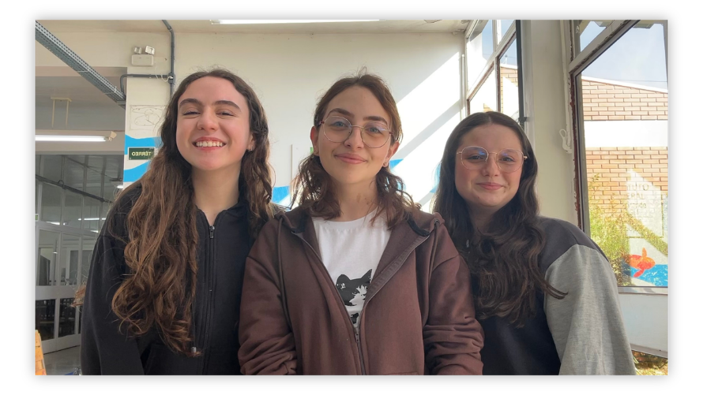

Laura Pereira Ebertz
Estudante do 2º ano do Curso Técnico em Informática Integrado ao Ensino Médio do IFRS – Campus Farroupilha. Desevolvimento do site e postagens no instagram.
O projeto é desenvolvido por estudantes e professoras do Instituto Federal de Educação, Ciência e Tecnologia do Rio Grande do Sul – Campus Farroupilha. A equipe participa das pesquisas, da produção de conteúdos e da divulgação do conteúdo.

Estudante do 2º ano do Curso Técnico em Informática Integrado ao Ensino Médio do IFRS – Campus Farroupilha. Desevolvimento do site e postagens no instagram.
Estudante do 2º ano do Curso Técnico em Informática Integrado ao Ensino Médio do IFRS – Campus Farroupilha. Desenvolvimento das pesquisas e apoio na atualização do site.
Estudante do 3º ano do Curso Técnico em Informática Integrado ao Ensino Médio do IFRS – Campus Farroupilha. Desenvolvimento das pesquisas academicas.
Licenciada em Matemática, com habilitação em Física, pela UCS, mestre e doutora em Matemática Aplicada pela UFRGS. Professora do IFRS – Campus Farroupilha e integrante da coordenação do projeto.
Licenciada em Matemática pela UFSM, mestre em Modelagem Matemática pela UNIJUÍ e doutora em Engenharia Mecânica pela UFRGS. Professora do IFRS – Campus Farroupilha e integrante da coordenação do projeto.